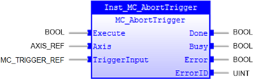
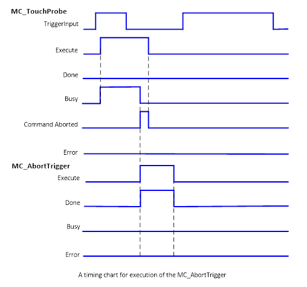

MC_AbortTrigger
Abort function blocks which are connected to trigger events,
e.g. MC_TouchProbe.

Description:
MC_AbortTrigger cancels a latch operation.
If MC_AbortTrigger is executed for a trigger which has no
latch request, it_AbortTrigger does nothing and ends normally. Likewise, if it is
executed for a MC_TouchProbe instruction which has finished (‘Done’ = TRUE).
Timing chart for MC_AbortTrigger execution is shown below:

Make sure the input and output parameters are of data type
indicated in the table below.
Inputs/Outputs:
|
Name
|
Data Type
|
Description
|
|
INPUTS
|
|
Execute
|
BOOL
|
Aborts trigger event at rising edge
|
|
Axis
|
AXIS_REF
|
Reference to the axis
|
|
TriggerInput
|
MC_TRIGGER_REF
|
Refer
ence to
trigger signal source. ‘TriggerInput’ may be
specified by the AXIS_REF. See
MC_TouchProbe
.
|
|
OUTPUTS
|
|
Done
|
BOOL
|
Trigger
functionality aborted
|
|
Busy
|
BOOL
|
The
FB is not finished and new output value is to be expected.
|
|
Error
|
BOOL
|
Signals
that an error has occurred within the Function Block
|
|
ErrorID
|
UINT
|
Error
identification
|
Examples:
Example 1:
|
 Example
Example
|
|
inst_AbortTrigger(Execute
:= bExecute
(*BOOL*)
,
Axis
:= Axis0Ref,
(*AXIS_REF*)
TriggerInput
:= mTrigInput,
(*MC_TRIGGER_REF*)
);
bDone := inst_AbortTrigger.Done;
bBusy := inst_AbortTrigger.Busy;
bError := inst_AbortTrigger.Error;
ErrorId := inst_AbortTrigger.ErrorID;
|
See also: